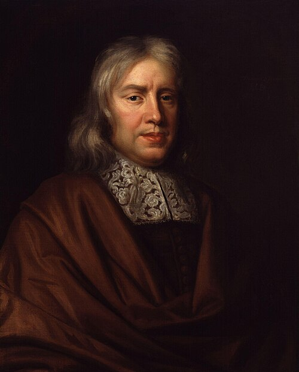
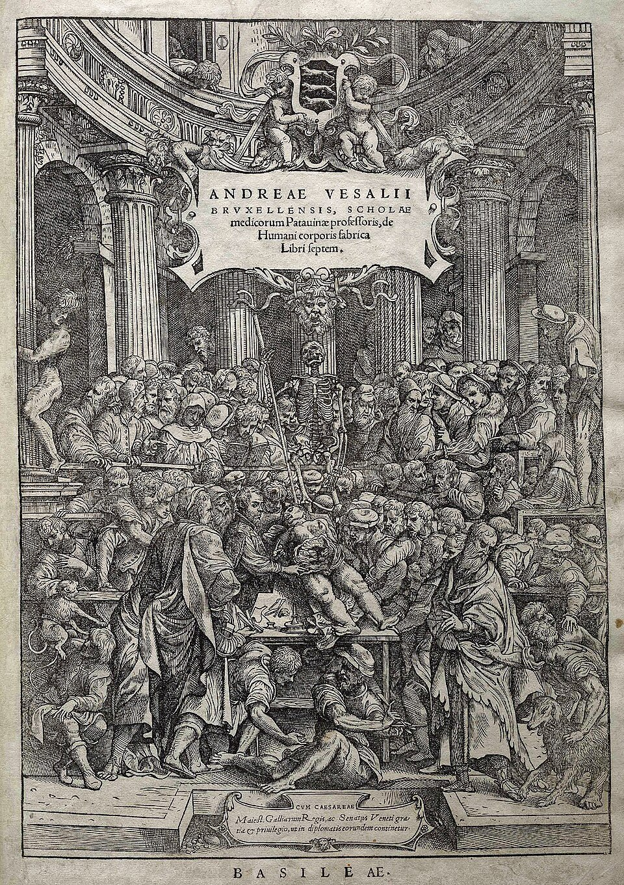
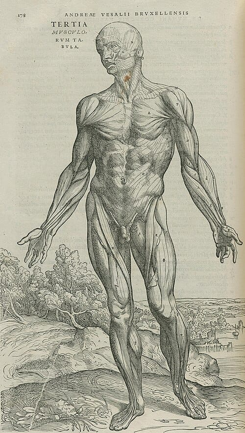

Renaissance
Paper 1: Medicine Through Time with the Western Front
Course Textbook
Enquiry: How has medicine changed from c1250 to the modern day?
Contents
|
Lesson 1: KT2.1: The New Spirit of Enquiry: Humanism, The Printing Press & The Royal Society (c1500–c1700)
|
|
|
Lesson 2: KT2.2: Thomas Sydenham & The Art of Bedside Observation (1676)
|
|
|
Lesson 3: KT2.3: Andreas Vesalius & The Anatomical Revolution (1543)
|
|
|
Lesson 4: KT2.4: William Harvey & The Circulation of the Blood (1628)
|
|
|
Lesson 5: KT2.5: Continuity in Treatment & The Great Plague of London (1665)
|
|
L1: KT2.1: The New Spirit of Enquiry: Humanism, The Printing Press & The Royal Society (c1500–c1700)[[SRC_MARKER:L5_Start]]
Learning Objectives
Explain how Gutenberg’s printing press transformed the communication of medical ideas across Europe.
Assess how the Royal Society and its journal Philosophical Transactions established the empirical scientific method.
Analyze the Renaissance Paradox: why revolutionary scientific communication failed to improve everyday treatments.
In 1440, Johannes Gutenberg created a machine that shattered the Catholic Church’s monopoly on knowledge: the movable-type printing press. For the first time in human history, revolutionary scientific treatises and anatomical plates could be mass-produced identically across Europe without copyist errors or clerical censorship. Over two centuries later, King Charles II granted a Royal Charter to the Royal Society, uniting empirical scholars under the motto Nullius in Verba—"Take nobody's word for it". Yet, while scientific communication accelerated at blinding speed, everyday patients still swallowed crushed beetle shells and bled into pewter bowls. This is the profound paradox of the Renaissance.
Did you know?
- [object Object]
- [object Object]
- [object Object]
Vocabulary Check
The Odd One Out: Circle ONE term that does not belong with the others. Explain your reasoning: What historical connection links the other terms, and why is your chosen term different?
Monastic Scriptoria | Movable Metal Type | The Royal Society | Nullius in Verba | Philosophical Transactions | Renaissance Paradox
Teacher Model / Pupil Reasoning:
[[SRC_MARKER:L5_Source_0]]
Source S1: Renaissance Printing House with Movable Type (16th c.)

A Renaissance printing house showing compositors setting movable metal type and pressmen operating the heavy wooden screw press.
Q1 Look at Source A above: Study the compositors arranging individual type characters and the pressmen operating the wooden screw press. How did this mechanical printing process permanently prevent Church authorities from suppressing new anatomical discoveries, and why did it eliminate the compounding errors introduced by medieval copyists?
[[SRC_MARKER:L5_Source_1]]
Source S2: Title Page of Philosophical Transactions, Vol. I (1665–1666)

Frontispiece of Volume I of Philosophical Transactions (1665), the world's first peer-reviewed scientific journal, printed for John Martyn, printer to the Royal Society.
Q2 Look at Source B above: How does the establishment of an official, peer-reviewed scientific journal demonstrate a complete departure from medieval university traditions where knowledge was based on memorising Galen's classical Latin texts?
[[SRC_MARKER:L5_Source_2]]
Source S3: Robert Hooke's Engraving of a Flea from Micrographia (1665)

Robert Hooke's famous fold-out engraving of a flea observed under the compound microscope, published by the Royal Society in Micrographia (1665).
Q3 Look at Source C above: Hooke drew this flea using a compound microscope in 1665. Why did seeing microscopic details of insects amaze people in the 17th century, yet fail to help doctors understand what actually caused infectious diseases?
[1.1] Throughout the Middle Ages, the communication of medical ideas was severely constricted by the physical limitations of book production and the ideological monopoly of the Catholic Church. Every medical treatise, herbal compendium, and anatomical diagram had to be hand-transcribed by monastic scribes in cathedral scriptoria. This process was exceptionally slow, immensely expensive, and fraught with cumulative human error: copyists frequently misread obscure Latin terms, omitted crucial lines, and distorted hand-drawn illustrations beyond scientific recognition. Furthermore, because monks controlled the production of books, the Church exercised strict doctrinal censorship, suppressing any writing that questioned Galenic orthodoxy or Biblical interpretation while declaring Galen’s teleological treatises infallible sacred truth.
[1.2] In c.1440, the German metalworker Johannes Gutenberg perfected the movable-type printing press in Mainz, introducing individual cast-metal letters that could be arranged into pages, inked, and pressed onto paper at high speed. Brought to England by William Caxton in 1476, the printing press revolutionized European intellectual life. For the first time, hundreds of identical copies of a medical work could be produced in weeks rather than years, at a fraction of the cost. Crucially, the press bypassed monastic scriptoria, transferring publishing into the hands of secular scholars, commercial printers, and university faculties.
[2.1] By the mid-17th century, the revival of classical Greek scholarship known as Humanism had inspired natural philosophers to demand empirical, observable proof rather than blind deference to ancient texts. In November 1660, a group of twelve scholars—including the architect Christopher Wren, the chemist Robert Boyle, and the polymath Robert Hooke—met at Gresham College in London to establish a formal scientific institution. In 1662, King Charles II granted them a prestigious Royal Charter, formally incorporating "The Royal Society of London for Improving Natural Knowledge".
[2.2] The Royal Society adopted the radical Latin motto Nullius in Verba ("Take nobody's word for it"), boldly declaring their refusal to accept any scientific claim based merely on classical authority, ecclesiastical tradition, or philosophical speculation. To replace hearsay, members conducted weekly laboratory demonstrations, demanding repeatable physical evidence. In 1665, the Society’s secretary, Henry Oldenburg, launched Philosophical Transactions, the world’s first peer-reviewed scientific journal. This publication established an international communications network where researchers across Europe could submit experimental findings, replicate observations, and debate discoveries, permanently democratizing scientific inquiry.
[[SRC_MARKER:L5_Source_5]]
Source S4: Title Page of Philosophical Transactions, Vol. I (1665–1666)
Q4. Look at Source B above: Notice that this journal was printed for John Martyn, 'Printer to the Royal Society'. How does the creation of Europe's first peer-reviewed scientific journal embody the Royal Society's radical motto Nullius in Verba ('Take nobody's word for it'), and why was publishing verified laboratory methods in print essential for transforming alchemy into modern scientific medicine?
[3.1] The empirical mandate of the Royal Society was powerfully demonstrated through groundbreaking optical innovations. In 1665, Robert Hooke published Micrographia, an extraordinary volume illustrated with magnificent fold-out engravings of insects, feathers, and plants observed through compound microscopes. Hooke’s famous rendering of an ordinary flea (Source C), magnified to terrifying monstrous proportions, astonished the public and proved that nature contained an invisible, intricate microscopic architecture invisible to the naked human eye. While inspecting thin slices of cork, Hooke observed small box-like compartments and coined the term "cells".
[3.2] A decade later, in 1676, a Dutch draper and amateur microscope-maker named Antonie van Leeuwenhoek submitted letters to the Royal Society describing tiny living creatures he had discovered swimming in pond water and dental scrapings. Using single-lens microscopes with exquisite optical magnification, Leeuwenhoek documented "animalcules"—the first recorded observation of bacteria and protozoa in human history. The Royal Society confirmed his startling findings, publishing his letters in Philosophical Transactions to an astonished continent.
[4.1] Despite these dazzling technological and communicative breakthroughs, the Renaissance witnessed a profound historical paradox: revolutionary advances in scientific communication produced virtually zero improvement in everyday medical treatment. While elite university physicians read Vesalius and debated the Royal Society’s transactions in Latin, books remained costly luxury commodities far beyond the financial reach of the general population. The overwhelming majority of citizens in Tudor and Stuart Britain were illiterate; when sickness struck, they did not consult peer-reviewed journals but relied on local wise women, itinerant barber-surgeons, and cheap printed astrological almanacs that continued to preach Galenic humoural balance and planetary alignment.
[4.2] Crucially, neither Hooke nor Leeuwenhoek understood that their microscopic organisms were linked to disease. For two centuries following Leeuwenhoek’s discovery, bacteria were treated as fascinating optical curiosities rather than deadly pathogens. Without an understanding of germ transmission—which would not emerge until Louis Pasteur’s Germ Theory in 1861—physicians had no theoretical basis for creating antiseptic surgery, antibiotics, or effective public health measures. Consequently, while the printing press and the Royal Society successfully demolished the intellectual authority of Galen, they left ordinary sick patients to suffer under the same ancient remedies of bloodletting, purging, and miasmatic pomanders that had dominated the medieval world.
Active Tasks
Scientific Communication vs Everyday Medical Beliefs
Q5. Advancement vs Limitations
GCSE Exam Practice
Q6. Explain one way in which ideas about the cause of disease in the Renaissance period (c1500–c1700) were similar to ideas in the Medieval period (c1250–c1500). [4 marks]
Q7. Explain why there were changes in the way ideas about the causes of disease and illness were communicated in the period c1500–c1700. [12 marks]
L2: KT2.2: Thomas Sydenham & The Art of Bedside Observation (1676)[[SRC_MARKER:L6_Start]]
Learning Objectives
Explain Sydenham’s revolutionary emphasis on direct bedside clinical observation.
Analyze how Sydenham classified diseases into distinct species.
Evaluate the limits of Sydenham’s practice: rational treatments alongside traditional humoral remedies.
While European anatomists dissected corpses in lecture theatres, one London physician stepped out of the university library and into the sickroom. Thomas Sydenham, nicknamed the "English Hippocrates", told young doctors: "You must go to the bedside; there alone you can learn disease." He rejected 1,500 years of astrological charts and complex urine wheels, arguing that illnesses were distinct biological entities with recognizable symptoms—like species of plants in a garden. Yet, even as he proved measles was separate from scarlet fever and prescribed Peruvian tree bark for malaria, Sydenham still bled patients to balance their humours. How could one man be both a revolutionary pioneer and a prisoner of ancient tradition?
Did you know?
- [object Object]
- [object Object]
- [object Object]
Vocabulary Check
The Golden Sentence: Choose TWO terms from the word bank. Write ONE grammatically sophisticated, historically accurate sentence connecting them using a causal conjunction (because, although, or consequently):
English Hippocrates | Observationes Medicae (1676) | Disease Classification | Cinchona Bark | Cooling Regime | Humoural Persistence
Teacher Model / Pupil Sentence:
[[SRC_MARKER:L6_Source_0]]
Source S1: Portrait of Thomas Sydenham by Mary Beale (c1688)

Portrait of Dr Thomas Sydenham painted by his close friend Mary Beale, showing his sober attire and reflective demeanor.
Q1 Look at Source A above: Notice Sydenham's plain, sober attire and natural hair, contrasting with the extravagant powdered wigs and velvet robes of theatrical London doctors. How does his modest appearance reflect his clinical philosophy that real medicine must be practiced through rigorous observation at the patient's bedside rather than university pomp?
[[SRC_MARKER:L6_Source_1]]
Source S2: The Quack Physician by Jan Steen (1660s)

A 17th-century painting depicting an itinerant quack doctor examining a urine flask and flattering a patient.
Q2 Look at Source B above: Look at the theatrical gestures of the travelling quack and the gullible villagers gathering around him. Why did uneducated mountebanks and quack doctors continue to flourish in 17th-century England, despite the groundbreaking discoveries of Vesalius and Harvey?
[[SRC_MARKER:L6_Source_2]]
Source S3: Renaissance Municipal Hospital Ward

A 17th-century hospital ward showing rows of beds cared for by matrons following the closure of religious monastic infirmaries.
Q3 Look at Source C above: Compare this early modern municipal hospital ward with medieval monastic care. What changes can you identify in terms of hygiene, administration, and medical supervision following Henry VIII's Dissolution of the Monasteries?
[1.1] In the mid-17th century, university medical education in England remained stubbornly detached from the reality of patient care. Wealthy physicians spent years studying Galen, Hippocrates, and Aristotle in Latin, memorizing theoretical passages and casting horoscopes to diagnose illnesses. When visiting a sick aristocrat, a physician often spent more time inspecting a glass matula filled with urine or calculating planetary alignments than examining the patient’s physical body. If a treatment failed, doctors blamed the patient’s corrupt humoural constitution rather than their own medical theories.
[1.2] Thomas Sydenham (1624–1689) rebelled against this academic detachment. Having served as a cavalry officer in the English Civil War, Sydenham brought a practical, no-nonsense soldier’s mindset to medicine. Practicing in Westminster, he insisted that true medical knowledge could only be gained by sitting beside the patient’s bed, taking comprehensive clinical notes, and carefully tracking symptoms from the onset of fever to recovery or death. Because he revived the ancient Greek emphasis on natural observation, contemporaries revered him as the "English Hippocrates".
[2.1] Sydenham’s greatest conceptual breakthrough was his revolutionary theory of disease classification. For 1,400 years, Galenic orthodoxy taught that disease was entirely personal: each individual had a unique mixture of the Four Humours, meaning that two people suffering from a fever were experiencing two completely different internal imbalances. Sydenham flatly rejected this, arguing that diseases were external entities that existed independently of the patient. He compared illnesses to plants in a botanical garden, asserting that diseases could be organized into distinct families and "species" based on fixed clusters of symptoms.
[2.2] In 1676, Sydenham published his masterwork, Observationes Medicae (Medical Observations), which quickly became the definitive clinical handbook across Europe. Applying his classification system, he demonstrated that conditions previously lumped together under the vague label of "fevers" were actually entirely separate biological disorders. Most famously, he carefully documented the distinct rashes, incubation periods, and fever patterns of measles and scarlet fever, proving conclusively that they were two independent diseases requiring different care.
[[SRC_MARKER:L6_Source_5]]
Source S4: Portrait of Thomas Sydenham by Mary Beale (c1688)
Q4. Look at Source A above: Notice Sydenham's plain, sober attire and natural hair, contrasting with the extravagant powdered wigs and velvet robes of theatrical London doctors. How does his modest appearance reflect his clinical philosophy that real medicine must be practiced through rigorous observation at the patient's bedside rather than university pomp?
[3.1] Sydenham’s empirical focus led him to champion innovative, common-sense treatments. For smallpox, traditional physicians sealed sickrooms, lit roaring fires, and covered shivering patients in heavy woolen blankets to "sweat out the venom". Sydenham recognized that this suffocating heat worsened the fever and killed patients. Instead, he pioneered a revolutionary "cooling regime": opening windows to circulate fresh air, removing heavy blankets, and prescribing cool fluids and mild cordials. Survival rates among his smallpox patients improved dramatically.
[3.2] Sydenham also enthusiastically embraced new botanical remedies brought from the Americas. He popularized the use of Cinchona bark (Peruvian bark, containing quinine) to treat ague (malaria), showing that specific medicines could target specific diseases rather than just purging the whole body. He also developed liquid laudanum (opium dissolved in alcohol), providing the first reliable and easily dosed painkiller for chronic sufferers.
[4.1] Despite his profound contributions to clinical diagnosis, Sydenham’s practice illustrates the hard boundaries of Renaissance science. Because the Germ Theory lay nearly two centuries in the future, Sydenham had no understanding of bacteria, viruses, or the true biological causes of infection. He firmly believed that epidemics were triggered by mysterious atmospheric changes and poisonous "miasmas" rising from the earth. Consequently, while his clinical descriptions of illnesses were brilliant, his understanding of what caused them remained speculative.
[4.2] Furthermore, when faced with conditions that did not respond to cinchona or cooling regimes, Sydenham fell back on traditional medieval therapies. Throughout his long career, he routinely bled and purged his patients to rebalance their humours, believing that bleeding lowered inflammatory heat. Furthermore, conservative physicians in London condemned him for undermining university tradition, and ordinary people continued to patronize quack doctors selling fake panaceas (Source B). Nonetheless, by establishing bedside empirical observation and disease classification, Sydenham laid the indispensable foundation for modern clinical epidemiology.
Active Tasks
Thomas Sydenham
Q5. Bedside Clinical Observation vs Traditional Humoural Treatments
GCSE Exam Practice
Q6. Explain one way in which Thomas Sydenham's approach to diagnosis was different from medieval physicians. [4 marks]
Q7. Explain why Thomas Sydenham was significant in the development of medicine in Britain. [12 marks]
L3: KT2.3: Andreas Vesalius & The Anatomical Revolution (1543)[[SRC_MARKER:L7_Start]]
Learning Objectives
Explain how Vesalius’s hands-on dissection method overthrew medieval university traditions.
Analyze how Vesalius identified and corrected over 300 of Galen’s anatomical errors.
Evaluate the impact of De Humani Corporis Fabrica (1543) and its critical limitations on medical treatment.
In 1537, a 23-year-old professor named Andreas Vesalius shocked the University of Padua. For over a thousand years, professors of anatomy sat high above the dissection theatre in an elevated wooden throne called the cathedra, chanting ancient Latin passages from Galen while an illiterate barber-surgeon hacked away at a decaying corpse. If the body disagreed with Galen, professors insisted the body was deformed. Vesalius did the unthinkable: he climbed down from the pulpit, threw off his academic robes, took the dissecting knife into his own hands, and proved that Galen had made over 300 fundamental anatomical errors because he had never dissected a human being. Yet, as Vesalius revealed the true architecture of the human body, doctors remained completely powerless to cure diseases. Was his revolution brilliant, or practically useless?
Did you know?
- [object Object]
- [object Object]
- [object Object]
Vocabulary Check
Conceptual Classification: Categorise the terms from the word bank into the two historical boxes below:
De Fabrica (1543) | Padua Anatomical Theatre | Cathedra | Galenic Errors | Heart Septum | Empirical Anatomy
Power, Governance & Warfare
Economy, Trade & Society
[[SRC_MARKER:L7_Source_0]]
Source S1: Frontispiece of De Humani Corporis Fabrica (1543)

The frontispiece of De Fabrica (1543) showing Vesalius personally dissecting a female cadaver surrounded by students and spectators.
Q1 Look at Source A above: Notice where Andreas Vesalius is standing and what he is doing in this Padua anatomy theatre. How did his hands-on dissection of the human body contrast with the traditional medieval method where a professor sat in a high chair reading Galen?
[[SRC_MARKER:L7_Source_1]]
Source S2: Vesalius Muscle Men Plate (1543)

One of the famous "Muscle Men" woodcut plates from Book II of De Fabrica, showing the superficial muscular layer in classical posture.
Q2 Look at Source B above: Examine the dissected human body posed dynamically against the landscape of the Italian countryside. How does this plate reflect the revolutionary collaboration between Renaissance art (Titian's workshop) and scientific dissection, and why was visual anatomical accuracy essential for moving surgery beyond medieval guesswork?
[[SRC_MARKER:L7_Source_2]]
Source S3: Traditional Phlebotomy Man Diagram

A 16th-century printed bloodletting chart illustrating the enduring reliance on Galenic humoural vein points.
Q3 Look at Source C above: Notice the multiple vein points marked across the human figure for routine bloodletting. Why did ordinary people and traditional barbers cling to this centuries-old humoural treatment, even after Vesalius demonstrated that Galen's anatomy was deeply flawed?
[1.1] In medieval European universities, the study of human anatomy was an exercise in passive textual repetition rather than scientific discovery. In rare winter dissections—permitted only a few times each year on executed criminals—the professor of anatomy sat elevated above the lecture hall in a high wooden pulpit called the cathedra. From this throne, he read aloud ancient Latin texts written by the Roman physician Claudius Galen. Down below on the damp stone floor, an uneducated barber-surgeon (the demonstrator) sliced open the body, while a junior assistant pointed out organs with a wooden wand. If a dissected organ clearly contradicted Galen’s written descriptions, professors dismissed the discrepancy by claiming the corpse was deformed, diseased, or that human bodies had physically degenerated since classical times.
[1.2] This entrenched scholastic tradition was shattered when Andreas Vesalius (1514–1564) arrived at the University of Padua. Appointed Professor of Surgery in 1537 at just 23 years old, Vesalius rejected the cathedra. In front of packed audiences of students, visiting physicians, and city officials (Source A), he stepped down to the dissection table, took the scalpel into his own hands, and dissected human cadavers himself. Vesalius insisted that medical students must trust what their own eyes observed in human tissue rather than blindly revering ancient authority.
[2.1] Through meticulous, repetitive human dissections, Vesalius made a startling discovery: Galen’s revered anatomical treatises were riddled with fundamental errors. Vesalius realized that Roman law had strictly prohibited human dissection; consequently, Galen had dissected Barbary apes, dogs, sheep, and pigs, mistakenly assuming that human internal organs were anatomically identical to animals. Over several years of intensive research, Vesalius identified and documented over 300 major errors in Galen’s anatomical writings.
[2.2] Among his most significant corrections, Vesalius proved that the human lower jaw (mandible) consists of a single solid bone, whereas Galen had claimed it consisted of two separate bones (which is true in dogs and apes, but not humans). He proved that the human breastbone (sternum) has three segments rather than seven, that the human liver does not have five separate lobes, and that the human uterus is a single chamber rather than multi-horned. Crucially for cardiovascular physiology, Vesalius examined the central muscular wall (septum) of the heart and proved it was thick and solid, decisively refuting Galen’s claim that invisible microscopic pores allowed blood to seep directly from the right ventricle into the left.
[[SRC_MARKER:L7_Source_5]]
Source S4: Vesalius Muscle Men Plate from De Fabrica (1543)
Q4. Look at Source B above: Examine the dissected human body posed dynamically against the landscape of the Italian countryside. How does this plate reflect the revolutionary collaboration between Renaissance art (Titian's workshop) and scientific dissection, and why was visual anatomical accuracy essential for moving surgery beyond medieval guesswork?
[3.1] In 1543, at the age of twenty-eight, Vesalius published his monumental masterwork: De Humani Corporis Fabrica ("On the Fabric of the Human Body"). Printed in Basel by Johannes Oporinus, this massive 700-page folio represented a pinnacle of Renaissance printing technology and artistic brilliance. Vesalius collaborated with master artists from the Venetian workshop of Titian (including Jan van Calcar) to produce over 200 breathtakingly accurate woodcut illustrations (Source B). For the first time in medical history, students across Europe could examine identical, mathematically precise visual representations of human bones, muscles, veins, and internal organs.
[3.2] To ensure his findings reached beyond elite Latin scholars, Vesalius also published an abridged, cheaper summary handbook called the Epitome, designed specifically for practicing surgeons and medical apprentices. Illustrated editions and pirated copies quickly circulated across Germany, France, and England, standardizing anatomical education throughout the continent and permanently establishing human dissection as an essential requirement in university medical training.
[4.1] The publication of De Fabrica provoked furious hostility from conservative medical establishments. Many senior professors, whose reputations were built on interpreting Galen, fiercely attacked Vesalius. His former teacher at Paris, Jacobus Sylvius, denounced him as an arrogant madman ("Vesanus"), claiming that Galen was completely correct and that the human body must have changed shape since antiquity. Disillusioned by this bitter academic resistance, Vesalius burned many of his unpublished manuscripts and resigned from Padua to serve as imperial court physician to Emperor Charles V.
[4.2] Crucially, while Vesalius revolutionized anatomical science and inspired generations of researchers, his discoveries had virtually zero immediate impact on treating sick patients. Knowing the exact structure of a muscle or the shape of the liver did not explain what caused internal diseases, nor did it provide cures for infectious epidemics like the plague. Furthermore, surgery remained primitive, agonizing, and dangerous: without anaesthetics to control pain or antiseptics to prevent infection, surgeons could not perform major internal operations based on Vesalius’s maps. For the average sick patient, physicians continued to consult traditional humoural charts (Source C) and prescribe bloodletting, leaving everyday healthcare entirely untouched by the anatomical revolution.
Active Tasks
Andreas Vesalius
Q5. Human Anatomical Dissection vs Lack of Medical Cures
GCSE Exam Practice
Q6. Explain one way in which methods of investigating the human body in the Renaissance were different from methods in the Medieval period. [4 marks]
Q7. 'Andreas Vesalius’s work on anatomy was the most significant breakthrough in medicine in the period c1500–c1700.' How far do you agree? Explain your answer. [16+4 marks]
L4: KT2.4: William Harvey & The Circulation of the Blood (1628)[[SRC_MARKER:L8_Start]]
Learning Objectives
Explain how Harvey proved the heart acts as a mechanical pump driving closed blood circulation.
Analyze how Harvey used mathematical calculation to disprove Galen’s liver theory.
Assess why Harvey met fierce resistance and why circulation had zero immediate impact on medical cures.
For 1,400 years, every physician in Europe believed that blood was created in the liver from food, pumped through the body like fuel in a furnace, and completely consumed by the muscles and organs. Then came William Harvey. Inspired by Renaissance mechanical fire pumps, Harvey did something no doctor had ever done: he used mathematics. He calculated that in just one hour, the human heart pumps 540 pints of blood—three times the weight of the entire human body! Where could all that blood possibly come from, and where could it go? Harvey’s answer shook the foundations of medicine: blood does not burn up—it travels in a continuous, one-way circular loop pumped endlessly by the heart. Yet, when he published his discovery, conservative doctors mocked him as a madman, calling him a "circulator" (quack). Why did one of the greatest scientific breakthroughs in human history meet such furious resistance?
Did you know?
- [object Object]
- [object Object]
- [object Object]
Vocabulary Check
Spot the Deliberate Error: Read the statement below. One historical fact or vocabulary concept has been deliberately falsified. Underline the error and explain the accurate historical reality below:
De Motu Cordis (1628) | Mechanical Pump | Vein Valves | Circulator | Capillaries | Blood Volume Calculation
Challenge: Write ONE statement containing a deliberate historical misconception using De Motu Cordis (1628) or Mechanical Pump. Identify and correct the error:
Teacher Model / Historical Correction:
[[SRC_MARKER:L8_Source_0]]
Source S1: Vein Valve Experiments from De Motu Cordis (1628)

The engraved plate from Chapter 13 of De Motu Cordis (1628) showing Harvey’s arm ligature experiments with swollen veins and one-way valves.
Q1 Look at Source A above: Study Figure 2 where Harvey pushes a finger along a surface vein away from the heart. Why does the vein remain completely flat and bloodless between the valves, and how did this simple, physical demonstration conclusively demolish Galen's dogma that blood was produced by the liver and consumed as fuel by tissues?
[1.1] For fourteen centuries, European medicine operated under Claudius Galen’s complex model of physiology. Galen taught that the human body contained two entirely separate circulatory systems with different functions. Dark venous blood, containing natural spirits, was continuously manufactured in the liver from digested food (chyle) and flowed outwards through veins to nourish body tissues, where it was completely consumed like fuel in a fire. Meanwhile, bright arterial blood, enriched with vital heat and air from the lungs, was pumped through arteries to provide life and movement. Galen insisted that blood seeped between these two systems through invisible pores in the central muscular wall (septum) of the heart.
[1.2] William Harvey (1578–1657) dismantled this ancient dogma. After studying at Cambridge, Harvey traveled to the University of Padua, the leading center of European anatomical research. There, he studied under the master anatomist Hieronymus Fabricius, who had discovered tiny one-way flaps or "valves" inside human veins. While Fabricius believed these valves merely slowed down the outward rush of blood to prevent pooling in the feet, Harvey suspected they had a far more radical mechanical purpose: to ensure that blood could only ever flow in one direction—back toward the heart.
[2.1] Returning to London, Harvey was appointed physician to St Bartholomew’s Hospital and later royal physician to King James I and King Charles I. Armed with royal patronage, he conducted intensive laboratory research, dissecting over eighty species of animals. To observe cardiac contractions clearly, he studied cold-blooded creatures—such as frogs, toads, and snakes—whose hearts beat slow enough to analyze. He proved that the heart is a muscular pump that contracts (systole) to actively expel blood into the arteries, rather than expanding like a sponge to suck blood in as Galen had claimed.
[2.2] Harvey’s most devastating argument against Galen was mathematical. Measuring the internal capacity of the human left ventricle, he calculated that with every heartbeat, approximately two ounces of blood were forced into the aorta. At an average pulse of 72 beats per minute, the heart pumped 540 pints (nearly 300 liters) of blood into the body every single hour—three times the total weight of an average human being! It was physically impossible for the liver to manufacture this astronomical quantity of blood from food, nor could the body consume it. The only logical scientific conclusion was that the blood was not consumed at all: it was the same finite volume of blood circulating continuously in a closed, perpetual loop.
[[SRC_MARKER:L8_Source_3]]
Source S2: Vein Valve Experiments from De Motu Cordis (1628)
Q2. Look at Source A above: Study Figure 2 where Harvey pushes a finger along a surface vein away from the heart. Why does the vein remain completely flat and bloodless between the valves, and how did this simple, physical demonstration conclusively demolish Galen's dogma that blood was produced by the liver and consumed as fuel by tissues?
[3.1] To prove that blood circulated in a single direction, Harvey devised a brilliant, elegant experiment using living human volunteers (Source A). He tied a tight ligature (tourniquet) around an arm until the arterial pulse in the wrist ceased and the hand grew pale and cold, proving that blood entered the arm through deep arteries. When he loosened the bandage slightly into a medium tightness, the arteries remained open, but the superficial surface veins were compressed. The veins swelled dramatically, and tiny nodules appeared along their length—the one-way valves discovered by Fabricius.
[3.2] Harvey then used his finger to press and push blood down a vein away from the heart, between two valves. The vein remained completely empty and collapsed; blood refused to flow backwards. As soon as he released the lower finger, blood instantly rushed upwards toward the shoulder. This simple, repeatable physical demonstration proved conclusively that veins carry blood in only one direction: toward the heart. In 1628, Harvey published his complete findings in Frankfurt in his masterpiece, Exercitatio Anatomica de Motu Cordis et Sanguinis in Animalibus ("On the Motion of the Heart and Blood in Animals").
[4.1] Harvey’s discovery met furious resistance from conservative physicians. Many senior doctors refused to believe that Galen had been mistaken for over a millennium. Critics ridiculed Harvey as a "circulator" (a Latin pun meaning an irrational quack who travels in circles), and many of his wealthy private patients abandoned him, fearing his radical ideas. Furthermore, Harvey faced a major scientific gap: he could not explain how blood passed from the smallest arteries into the veins. Because powerful compound microscopes were not yet available, he could not see capillaries. It was not until 1661—four years after Harvey’s death—that the Italian scientist Marcello Malpighi used a microscope to discover capillaries in a frog’s lung, finally providing the missing microscopic link.
[4.2] Most significantly for ordinary people, Harvey’s discovery had virtually zero immediate impact on medical treatment. Knowing that blood circulated did not cure illnesses, heal surgical wounds, or prevent infectious diseases. Without knowledge of blood groups, early attempts at blood transfusion in France and England killed patients and were banned by law. Most tragically, despite Harvey conclusively proving that the human body contained a precious, finite volume of circulating blood, physicians—including Harvey himself—continued to prescribe aggressive bloodletting using leeches and lancets for another two hundred years to balance the humours. Therefore, while Harvey was a turning point in mechanical physiology, his breakthrough saved no lives during the Renaissance.
Active Tasks
William Harvey
Q3. Mechanical Circulation vs Traditional Humoural Practice
GCSE Exam Practice
Q4. Explain one way in which William Harvey's understanding of the circulatory system was different from Galen's theories. [4 marks]
Q5. Explain why William Harvey's discovery of the circulation of the blood was a turning point in medicine. [12 marks]
L5: KT2.5: Continuity in Treatment & The Great Plague of London (1665)[[SRC_MARKER:L9_Start]]
Learning Objectives
Analyze the organized civic and municipal public health response to the 1665 Great Plague.
Explain the persistence of medieval medical theories and ineffective treatments in 1665.
Evaluate the historiographical debate: Did 1665 show more change or continuity compared to 1348?
In the scorching summer of 1665, London became a city of horrors. Over 100,000 people—one in every five citizens—perished as the Great Plague tore through overcrowded parishes. Dead-carts rattled through deserted streets at midnight to the cry of "Bring out your dead!", dumping bodies into mass lime pits. Yet this was the era of the Royal Society, of Vesalius’s anatomy, and of Harvey’s blood circulation. Why did all the brilliant breakthroughs of the Scientific Revolution fail so completely to save London? While civic authorities enforced strict padlocked quarantines with armed watchmen and painted red crosses, doctors remained as utterly helpless as medieval monks in 1348. They prescribed smoking tobacco, strapped plucked chickens to swollen buboes, and slaughtered 200,000 cats and dogs—tragically helping the plague rats multiply. Was the Great Plague a triumph of government organization, or the ultimate proof of Renaissance medical failure?
Did you know?
- [object Object]
- [object Object]
- [object Object]
Vocabulary Check
The Odd One Out: Circle ONE term that does not belong with the others. Explain your reasoning: What historical connection links the other terms, and why is your chosen term different?
Bills of Mortality | Municipal Quarantine | Searchers of the Dead | Plague Doctor Beak | Miasmatic Pomander | Mass Lime Pits
Teacher Model / Pupil Reasoning:
[[SRC_MARKER:L9_Source_0]]
Source S1: 17th-Century Plague Doctor (Schnabel von Rom)

A 17th-century copperplate engraving of a Plague Doctor wearing an oiled protective robe and herb-stuffed beak mask.
Q1 Look at Source A above: Identify three distinct features of the plague doctor's costume (the waxed leather gown, the bronze spectacles, and the curved beak filled with sweet perfumes). How does each feature prove that physicians in 1665 still believed the primary cause of plague was corrupt miasma rather than contagion carried by rat fleas?
[[SRC_MARKER:L9_Source_1]]
Source S2: Night Burial in a Mass Plague Pit (1665)

A contemporary woodcut broadsheet showing dead-carts dumping plague victims at night into a mass lime pit.
Q2 Look at Source B above: Study the dead-cart dumping bodies into a mass pit at night. How does this scene illustrate both the terrifying scale of the 1665 Great Plague and the complete inability of doctors and authorities to stop the spread of the disease?
[1.1] In the spring of 1665, after a winter of bitter frost, bubonic plague erupted across London. Beginning in the crowded, impoverished suburban parish of St Giles-in-the-Fields, the epidemic exploded during an unusually hot, dry summer. Within weeks, the death toll escalated from dozens to thousands per week. At its catastrophic peak in September, over 7,000 people were dying every seven days. By the time the epidemic subsided in the winter frost, over 100,000 Londoners—nearly twenty percent of the city’s population—had perished.
[1.2] As panic gripped the capital, King Charles II, Parliament, and wealthy aristocrats fled to the countryside. Most university-educated physicians abandoned their practices and followed the court, leaving ordinary citizens to face the nightmare alone. Commerce collapsed, shipping on the River Thames was quarantined, and London became an eerie city of silence, punctuated only by the mourning wails of families and the midnight rumble of dead-carts.
[2.1] Compared to the disorganized, panicked response to the Black Death in 1348, the response of London’s local government in 1665 demonstrated a major advancement in civic public health administration. The Lord Mayor and Court of Aldermen issued strict "Plague Orders". Parishes appointed two female "Searchers of the Dead" to inspect corpses and verify the cause of death. Parishes also published weekly Bills of Mortality, detailing deaths parish by parish to monitor the epidemic’s spread—an early form of statistical epidemiology.
[2.2] The most aggressive municipal policy was compulsory household quarantine. When plague struck a family, the entire house was boarded up and locked for 28 days. A red cross, twelve inches high, was painted on the door beneath the solemn plea: "Lord have mercy upon us". Two watchmen were assigned to every locked home—one by day and one by night—to bring food and prevent anyone from escaping. All public gatherings, theatrical performances, sports, and traditional funeral ceremonies were banned. Burials were permitted only between sunset and sunrise, with bodies tipped into vast mass lime pits (Source B).
[[SRC_MARKER:L9_Source_4]]
Source S3: 17th-Century Plague Doctor (Schnabel von Rom)
Q3. Look at Source A above: Identify three distinct features of the plague doctor's costume (the waxed leather gown, the bronze spectacles, and the curved beak filled with sweet perfumes). How does each feature prove that physicians in 1665 still believed the primary cause of plague was corrupt miasma rather than contagion carried by rat fleas?
[3.1] While municipal administration progressed, medical understanding in 1665 showed almost complete continuity with the medieval Black Death. Because the bacterium Yersinia pestis was unknown, physicians and magistrates remained completely ignorant of the true vector: rat fleas. Believing that domestic animals carried the poisonous contagion in their fur, the Lord Mayor ordered the mass extermination of domestic animals: over 40,000 dogs and an estimated 200,000 cats were slaughtered. This tragic error wiped out the natural predators of the black rat, allowing flea-carrying rodents to multiply unchecked throughout London’s timbered tenements.
[3.2] Furthermore, the miasma theory remained the dominant medical explanation. Doctors wore protective leather suits and grotesque bird-like beak masks (Source A) packed with dried roses, cloves, and camphor to filter out "pestilential air". Citizens carried sweet-smelling pomanders, held sponges soaked in vinegar to their noses, and burned barrels of pitch in the streets. Schoolboys at Eton were forced to smoke tobacco every morning to ward off contagion. Quack doctors made fortunes selling useless "Plague Water", while folk healers strapped plucked, living chickens or dried toads to swollen buboes to "draw out the poison".
[4.1] The Great Plague of 1665 exposes the dramatic gulf between Renaissance scientific theory and everyday medical reality. Despite the brilliant anatomical achievements of Vesalius and the physiological models of Harvey, 17th-century medicine was utterly powerless to prevent or cure the plague. Bleeding and purging remained the primary therapies offered by physicians who stayed in London, further weakening dehydrated patients and hastening their deaths. The epidemic was eventually halted not by medical science, but by the bitter winter frosts of late 1665 (which killed the flea population) and the catastrophic Great Fire of London in September 1666, which incinerated thousands of flea-infested thatched slums.
[4.2] Historiographically, historians evaluate the 1665 epidemic as a dual narrative of administrative progress and medical stagnation. In terms of municipal governance, London displayed impressive bureaucratic sophistication: quarantine enforcement, weekly statistical casualty mapping, and centralized food supply management marked a genuine departure from 1348. Yet in terms of clinical medicine, diagnosis, and treatment, continuity completely outweighed change. Without germ theory, 17th-century doctors were as intellectually blind to the biological cause of plague as medieval flagellants had been three centuries earlier.
Active Tasks
The Great Plague of 1665
Q4. Municipal Quarantine vs Medical Stagnation
GCSE Exam Practice
Q5. Explain one way in which approaches to preventing the Great Plague in 1665 were different from approaches to the Black Death in 1348. [4 marks]
Q6. 'Approaches to treating and preventing disease during the Great Plague of 1665 showed almost complete continuity with the Black Death of 1348.' How far do you agree? Explain your answer. [16+4 marks]
Generated: 2026-09-19 17:20:27 UTC | Unit: edexcel_medicine